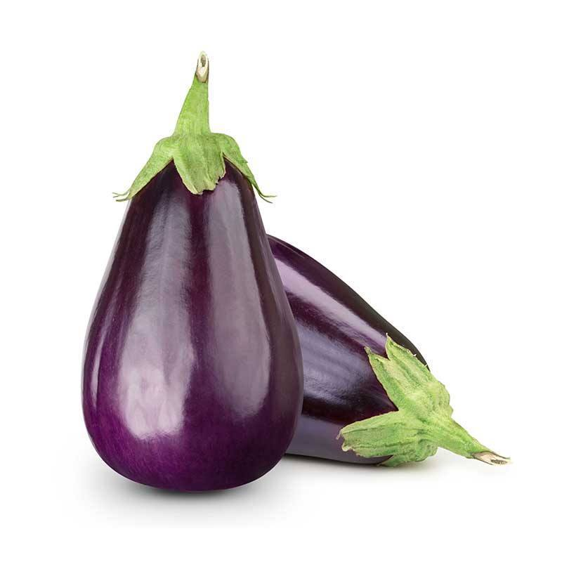

TERONG
Manfaat
Tanaman Terong (Solanum melongena L.) mengandung vitamin K, C, Kalori, Serat, karbohidrat dan protein yang bermanfaat untuk mengontrol kadar gula darah, menurunkan berat badan, baik untuk menjaga kadar kolestrol, menjaga kesahatan hati, kesehatan otak, kesehatan tulang, kesehatan kandungan, dan kesehatan kulit.
Tempat Tumbuh
Tanaman Terong (Solanum melongena L.) dapat hidup dengan baik pada dataran rendah maupun daratan tinggi dengan ketinggian berkisar antara 1-1200 dpl dan suhu udara 22-30 oC, curah hujan ideal untuk pertumuhan 85-200 ml/bulan. Tanaman terong dapat tumbuh dengan baik pada dataran rendah maupun dataran tinggi hingga ketinggian lebih dari 1.000 m dpl. Terong membutuhkan penyinaran matahari yang cukup. Jika menanam terong pada tempat yang bebayang dan sedikit matahari maka proses fotosintesisnya akan melambat.
TEKNIK BUDIDAYA
1. Pembibitan
Persiapkan wadah yang akan digunkan sebagai tempat penyemaian dapat berupa nampan, tray, polybag, pot dan juga kaleng bekas tidak lupa juga membuat lubang secukupnya pada wadah yang akan digunakan untuk melancarkan sirkulasi air. Persiapkan media semainya berupa campuran tanah dan kompos dengan perbandingan 1:1 atau 2:1. Masukan media tanam kedalam polybag lalu siram media tanam. Taburkan benih terong secara merata pada permukaan media tanam dengan memberikan jarak antar benih. Tutup benih dengan media tanam dengan tipis tipis sehingga posisi benih sedikit tertanam pada media tanam tersebut. Jika mmenggunakan tray khusus penyemaian, sebaiknya seyiap kotak cukup di isi dengan 1 – 2 benih terong. Setelah itu siran dengan semprotan air seperti sprayer, penyemprotan dilakukan sebanyak 1 – 1 kali sehari (pagi dan sore) tergantung kondisi lingkungan. Setelah bibit terong tumbucukup besar dan memiliki 3 – 7 helai daun, maka bibit tersebut dapat di pindahkan ke media tanam (tempat penanam yang di persiapkan).
2. Persiapan Lahan
Siapkan polybag berukuran sedang yakni ukuran 40×50 cm. Masukkan tanah yang sudah digemburkan ke dalam masing-masing polybag. Campurkan tanah gembur dengan pupuk kandang dengan perbandingan 3:1. Isi polybag dengan campuran tanah dan pupuk hingga tersisa 10 cm pada bagian atas permukaan media tanam. Polybag yang sudah diisikan campuran media tanam tadi ditempatkan di area yang teduh (tidak terkena sinar matahari langsung), biarkan selama dua hari sebelum digunakan.
3. Penanaman
Setelah bibit mulai tumbuh dan muncul 3 – 7 helai daun, itu tanda bibit siap dipindah ke media tanam. Maka langkah selanjutnya adalah mempersiapkan media tanam dengan baik, untuk dapat melakukan tahap ini dengan baik maka persiapkan polybag yang akan dijadikan media tanam, ukuran yang disarankan adalah sekitar 40cm. Isi dengan campuran tanah dan kompos dengan perbandingan 1:1. Setelah selesai dengan persiapan pemindahan ke media tanam, yang selanjutnya harus dilakukan adalah memindahkan bibit yang sudah dipersiapakan ke dalam media tanam. Lakukan ini dengan sangat hati hati supaya bibit tidak rusak.
4. Pemeliharaan
Dalam merawat tanaman terong yang ditanam di dalam polybag tidaklah terlalu sulit. Siram tanaman terong 2 kali sehari pada pagi dan sore, tapi kalau tanah masih lembab, maka tidak perlu menyiramnya. Pada usia tanaman 3 minggu biassnya hama dan penyakit sudah mulai mengintai tanaman terong. Oleh karena itu rutinlah bersihkan rumput liar yang mengganggu di sekitar tanaman terong agar nutrisi dapat terserap sempurna oleh tanaman. Untuk hama bisa menyingkirkannya secara manual seperti mengumpulkan hama tersebut kalau sudah mulai tampak lalu bakar.
5. Panen
Tahap ini adalah tahap yang paling ditunggu tunggu. Masa panen terong ungu adalah sekitar 3-4 bulan setelah masa tanam. Pada saat melakukan pemanenan ini sebaiknya tidak terlalu muda ataupun tua,cara mengeceknyadapat dirasakan dari tingkat kerasnya terong saat dipencet.